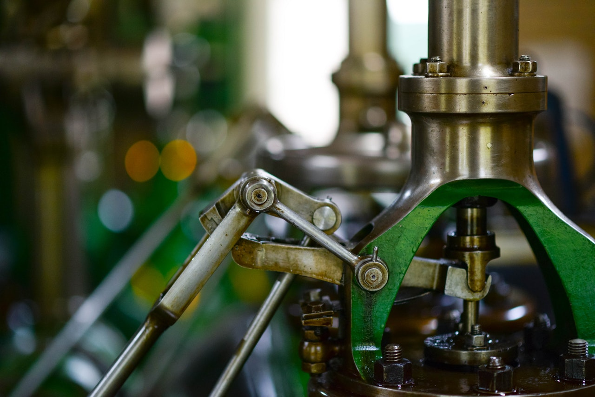
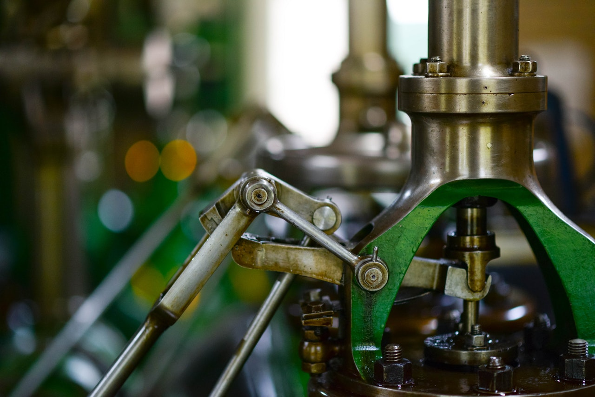
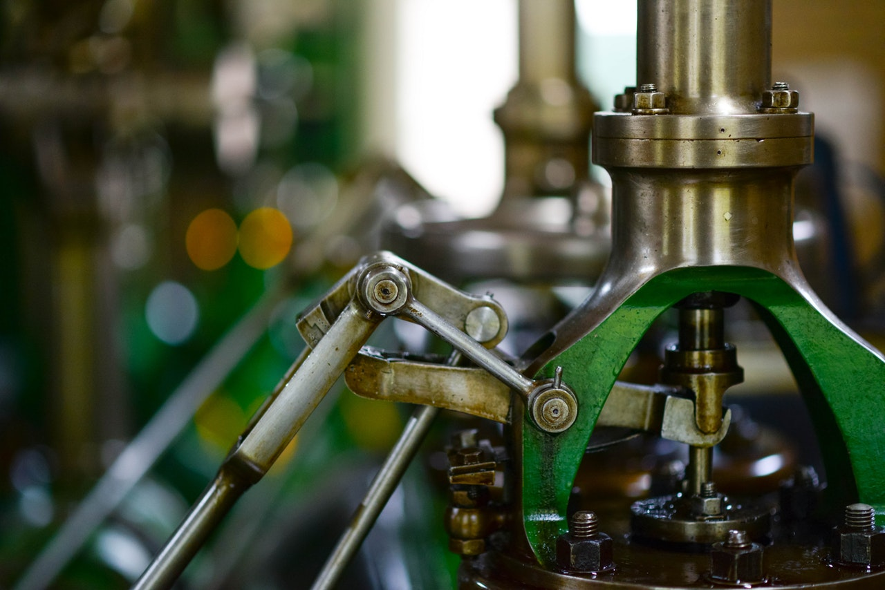

Jakub Jończyk

Jakub Jończyk

Z tej strony Jakub Jończyk. Jestem inżynierem, który obecnie zajmuje się prowadzeniem laboratorium wytrzymałościowego/metalograficznego w branży Automotive. W swojej pracy przeprowadzam różnorakie badania, od etapu projektowego do badań seryjnych. Jako laboratorium zajmuję się również analizą danych, od etapu zbierania i przetwarzania surowych danych do etapu analizowania dużych zbiorów danych. Tworzę również strony internetowe jako Front-end i Back-end developer. Dodatkowo swoją więdzę przekazuję młodszym pokoleniom jako trener programowania.
Zapraszam do zapoznania się z moim portfolio, które pokrótce przedstawi Państwu moją osobę.
Uzyskane wykształcenie wyższe
Historia zatrudnienia w ułożeniu achronologicznym
• Prowadzenie zajęć dla dzieci i młodzieży z zakresu programowania m.in.: Scratch, Python, C#
• Prowadzenie zajęć pokazowych
• Kontrola innych nauczycieli pod względem jakości prowadzenia zajęć
Początek 2022 jest związany z rozpoczęciem współpracy z "Gigantami Programowania". W ramach tej współpracy prowadzę zajęcia z zakresu programowania komputerowego dla dzieci i młodzieży. Zakres tych zajęć jest szeroki, zaczynając na Scratch'u, przechodząc dalej przez tworzenie stron internetowych, a kończąć na C#. Swoją wiedzę przekazuję na terenie takich miast jak Ruda Śląska, Katowice i Sosnowiec.
• Analiza danych z wykorzystaniem PowerBi
• Wykonywanie badań metalograficznych i przeprowadzanie prób wytrzymałościowych
• Obsługa maszyn i urządzeń laboratoryjnych
• Nadzór nad dokumentacją jakościową
• Przygotowanie raportów i analiza wyników badań
• Kontrola części od zewnętrznych poddostawców
• Tworzenie programów do obróbki cieplnej
• Prowadzenie projektów pod względem parametrów wytrzymałościowych
• Przyjmowanie i zwalnianie materiału wstępnego
Końcówka roku 2022 to początek mojego udziału w projekcie "Hurtownia danych". Projekt ten obejmuje stworzenie infrastruktury, która pozwoli na odpowiednią obróbkę i gromadzenie danych z różnych źródeł, a nastepnie umożliwi ich wnikliwą analizę i przedstawienie tych danych w dogodny sposób. Jako jeden z głównych członków projektu jestem odpowiedzialny za jego wdrożenie, a nastepnie utrzymanie, jako Data Engineer oraz PowerBi User.
W roku 2022 rozpoczął się nowy etap w funkcjonowaniu laboratorium. Po 3 latach od rozpoczęcia działania, czyli od 2019, przeszło ono daleką drogę i weszło na nowy poziom.
• Zwiększyliśmy zakres wykonywanych badań wytrzymałościowych o badania obciążeniowe oraz zginania.
• Część metalograficzna laboratorium została rozszerzona o badania mikrostruktury.
• Zaadaptowaliśmy również wiele specificznych badań pod wymogi danego klienta.
W 2022 roku zostałem członkiem zespołu do CQI-9. W ramach działania zespołu przygotowuję narzędzia do weryfikacji procesu obróbki cieplnej. Jestem również odpowiedzialny za część dokumentacji niezbędnej do wprowadzenia i utrzymania standardu.
W ramach prowadzenia laboratorium w 2021 roku zapoczątkowałem inicjatywę, w ramach której tworzę małe "programy wewnętrzne". Są to oprogramowania, tworzone zwykle w Pythonie, VBA lub w oprogramowaniu danej specyficznej maszyny, które mają za zadanie ułatwić i automatyzować powtarzalne i zajmujące dużo czasu operacje. W ramach tej inicjatywy zostały stworzone następujące programy:
• Automatyczna segregacja plików do konkretnych folderów wraz z ich utworzeniem
• Automatyczna kontrola poprawności wykonania procesu obróbki cieplnej
• Automatyczna kontrola wykonalności badań wytrzymałościowych
• Automatyczna aktualizacja formularzy do wyceny nowych projektów
• Zintegrowane zapisywanie plików badawczych wraz z blokadą błędnego nadpisywania plików
Początek 2019 to rozpoczęcie mojego samodzielnego prowadzenia laboratorium metalograficznego / badań wytrzymałościowych dla produktów branży Automotive i przemysłu. Ramach laboratorium przeprowadzam badania wytrzymałościowe z kategorii statycznej próby na rozciąganie oraz badania metalograficzne makrostrukturalne. Biorę również aktywny udział przy nowych projektach produktów pod względem własności wytrzymałościowych i struktury materiałowej odkuwanych części.
• Projektowanie stanowisk pracy i linii produkcyjnych
• Współpraca z projektantami i architektami
• Zamawianie usług oraz nowych urządzeń
• Realizacja projektów od fazy projektowania do produkcji seryjnej
• Ustalanie harmonogramu prac i koordynacja wykonawców
• Modernizacja, ulepszenie i wprowadzanie zmian na liniach produkcyjnych
W roku 2018 w ramach mojej pracy przeprowadziłem dwa duże projekty:
• Instalacja systemu chłodzenia maszyn produkcyjnych oraz wanien chłodzących na dwóch halach produkcyjnych
• Montaż pras hydraulicznych przeznaczonych do produkcji seryjnej
Dodatkowo poprowadziłem wiele innych pomniejszych projektów takich jak: relokalizacja maszyn CNC, budowa podłogi podniesionej.
• Nadzorowanie procesu produkcyjnego
• Nadzór nad dokumentacją jakościową, produkcyjną oraz obrotu magazynowego
• Wprowadzanie danych do systemu SAP
W 2017 rozpocząłem pracę w Leiber Poland od rocznego stażu. W ramach tego stażu odbyłem szkolenia oraz pracowałem w następujących działach:
• Logistyka
• Obróbka cieplna i plastyczna
• Obróbka mechaniczna
• Kontrola jakości
• Planowanie produkcji
• Zakupy
• CAD i narzędziownia
• Projekty techniczne
• Oznaczanie parametrów fizykochemicznych wód oraz gleb
• Przygotowywanie odczynników chemicznych
• Analiza wyników badań
Staż w dziale chemii nieorganicznej. Przygotowanie próbek do badania zawartości chlorków oraz fenoli zawartych w glebie.
• Analiza składu spalin
• Obsługa kotła olejowego i gazowego
• Obsługa aparatury kontrolno-pomiarowej
• Wyszukiwanie przecieków w rurach preizolowanych
• Tworzenie protokołów z przeglądów instalacji elektrycznej
W ramach stażu studenckiego odbyłem miesięczne praktyki w następujących działach PEC - Ruda Śląska:
• Dział Nadzoru Eksploatacji
• Zakład Ciepłowniczy
• Zakład AKPiA i Elektryczny
Lista moich umiejętności programistycznych (przeciągnij, aby przewinąć)

Tworzenie treści widocznych dla użytkownika

Strefa programowania niewidoczna dla użytkownika

Obróbka i analiza danych

Reszta ciekawych umiejętności
Moja biegłość w każdym języku (przeciągnij, aby przewinąć)
Ojczysty
Biegły
Komunikatywny
Podstawowy
Lista obsługiwanych oprogramowań (przeciągnij, aby przewinąć)

Oprogramowanie do kompleksowego zarządzania przedsiębiorstwem
Technologie Komputerowego Wspomagania

Programy używane w codziennej pracy laboratorium

Pozostałe specjalistyczne oprogramowanie
Uzyskane uprawnienia oraz odbyte szkolenia
Osiągnięcia w liczbach (koniec 2022)
CV są ogólne (bez wypisanych umiejętności) i w różnych językach
© Copyright Jakub Jończyk 2023